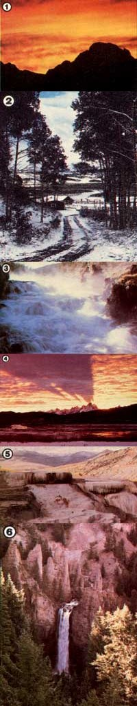

Against two dramatically beautiful Grand Teton backdrops: [1] Mt. Moran stands majestically amidst a blazing inferno of colors. [2] In the high mountains of Wyoming, even in June, one is never quite free from the threat of sudden snow. Three inches fell near this picturesque cabin on June 18, the day our photograph was taken. [3] Even when no tourists are around to enjoy the marvelous show, the Firehole Cascade continues its turbulent journey in Yellowstone National Park. [4] Mountain shadows from the majestic Tetons are caught in a layer of crimson clouds. Aside from those of us who saw the sun few people have ever had the fortune to witness such a spectacular natural scene. [5] Minerva Terrace, at Mammoth Hot Springs, puts on her beautiful winter face. [6] The Lower Falls plummet into a deep gorge that's known as the Grand Canyon of Yellowstone.